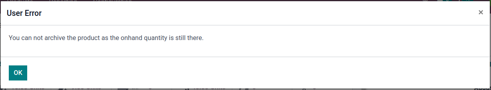

<section class="container">
    <div class="row">
        <div class="col-md-offset-1 col-md-8 mb64 mt64">
            <div>
                <h1 class="display-5 font-weight-bold">Product Archive Check</h1>
                <h2 class="font-weight-bold">Description</h2>
                This module does not let a product be archived if the qty on hand is not 0
            </div>
            <br />
            <div>
                <h2 class="font-weight-bold">Functionality</h2>
                When trying to archive a product with inventory on hand the following pop-up message will appear:
                <div class="oe_mb32 oe_demo oe_picture oe_screenshot">
                    
                </div>
                The user will be restricted from archiving product while product is in stock
            </div>
            <br />
            <div>
                <h2 class="font-weight-bold">Credits</h2>
                <h4 class="font-weight-bold">Contributors</h4>
                <li>Sodexis &lt;<a href="mailto:dev@sodexis.com">dev@sodexis.com</a>&gt;</li><br />
                This module is maintained by Sodexis.<br />
            </div>
        </div>
    </div>
</section>